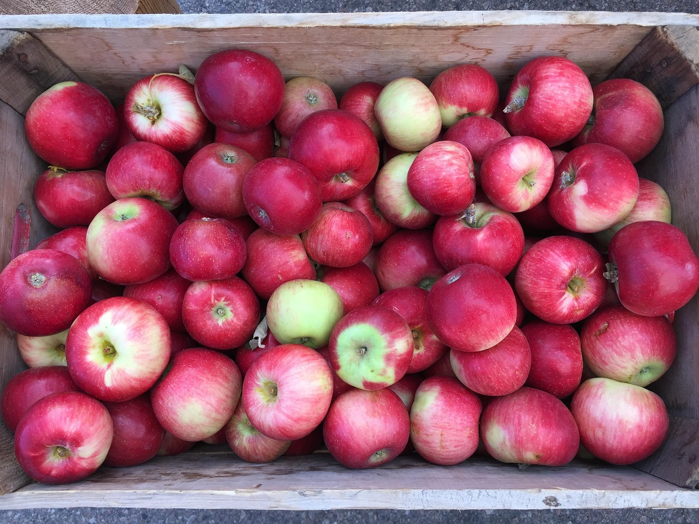
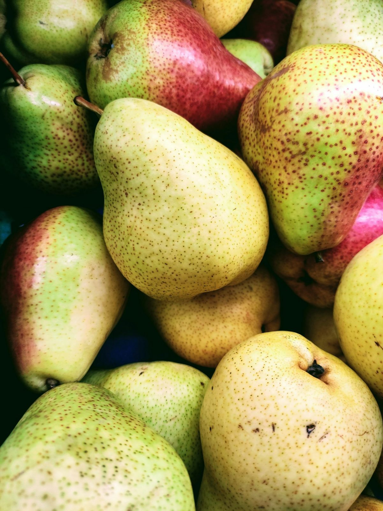

등급 기준
검수원이 상자 3개를 열어 무게 · 크기 · 착색 · 흠을 봅니다. 기준에 못 미치면 한 등급 내려 경매합니다.
과일
| 품목 | 기준 | 특 | 상 | 보통 |
|---|---|---|---|---|
| 사과 | 개당 무게 | 375 g 이상 | 300~374 g | 250~299 g |
| 배 | 개당 무게 | 750 g 이상 | 600~749 g | 500~599 g |
| 감귤 | 개당 무게 | 80~110 g | 65~79 g | 50~64 g |
| 단감 | 개당 무게 | 250 g 이상 | 190~249 g | 150~189 g |
| 포도 | 송이당 무게 | 450 g 이상 | 350~449 g | 250~349 g |
| 복숭아 | 개당 무게 | 300 g 이상 | 250~299 g | 200~249 g |
| 딸기 | 개당 무게 | 25 g 이상 | 17~24 g | 12~16 g |
채소
| 품목 | 기준 | 특 | 상 | 보통 |
|---|---|---|---|---|
| 배추 | 포기당 무게 | 3.0 kg 이상 | 2.4~2.9 kg | 1.8~2.3 kg |
| 무 | 개당 무게 | 1.8 kg 이상 | 1.3~1.7 kg | 0.9~1.2 kg |
| 양파 | 지름 | 80 mm 이상 | 65~79 mm | 50~64 mm |
| 대파 | 흰 줄기 굵기 | 18 mm 이상 | 14~17 mm | 10~13 mm |
| 애호박 | 개당 무게 | 300~360 g | 260~299 g | 220~259 g |
선별 도해
- 84 mm 구멍에 걸림
- 특
- 76 mm 구멍에 걸림
- 상
- 70 mm 구멍에 걸림
- 보통
- 70 mm 구멍 통과
- 등외
착색 비율 (사과 · 복숭아)
- 특70 % 이상
- 상50 % 이상
- 보통30 % 이상

공통 기준
| 항목 | 특 | 상 | 보통 |
|---|---|---|---|
| 같은 크기 비율 (한 상자) | 90 % 이상 | 80 % 이상 | 70 % 이상 |
| 착색 비율 (사과 · 복숭아) | 70 % 이상 | 50 % 이상 | 30 % 이상 |
| 흠 · 상처 | 없음 | 5 % 이하 | 10 % 이하 |
| 이물 · 다른 품종 섞임 | 불가 | 불가 | 불가 |
- 등외
- 보통에 못 미치는 상자 · 07:40 재경매 또는 반송
- 등급 이의
- 검수 당일 06:00까지 검수실
